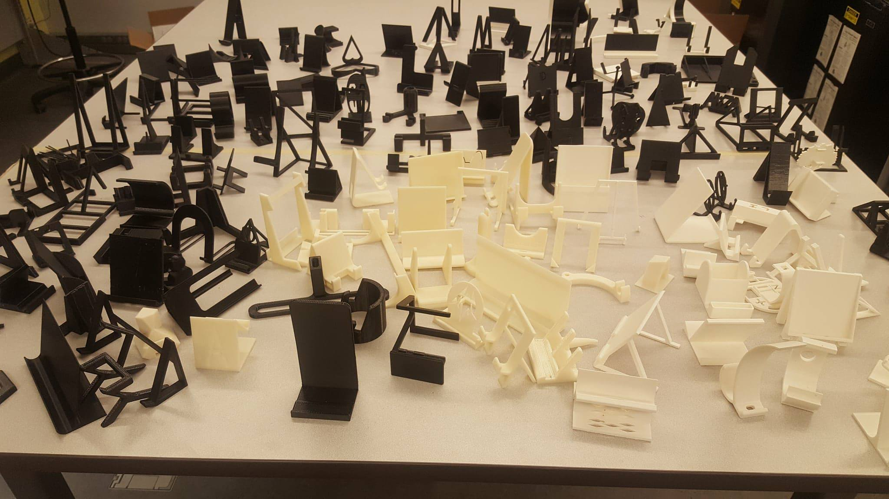

Projects
-
Predicting 3D Printing Material Using Machine Learning;Jun. 2020 - Aug. 2020
- Performed data pre-processing including converting object data-type to integers data-type, standardization, feature scaling and data-splitting
- Trained and validated Linear Regression and Decision Tree Regression models in order to choose the best model for predicting material used for 3D Printing based on print settings
- After that, I used the chosen model to predict 3D Printing materials for other datasets. The model was had an accuracy of 94.4\%.
- Kaggle link here.
-
MATLAB numerical analysis of 2D heat equation;3B study term
- Overview: This was a heat transfer study of how fins can help cool down a part. The part here has the left side heated to a constant temperature. While the other surface is subject to convection. Also, the fin does not cover the entirity of the part when in use. So, the corners have to be taken into consideration as well. The environment was considered to be at 20 deg C. Radiation was not taken into consideration.
- What I did (1): Firstly, I divided the part and the possible fin into different regions. Then, I derived the equations for each region. I decided to use symmetry of the geometry to my advantage and only calculated the values once. The number of nodes was left as an arbitrary value dependent on the spatial step size.
- What I did (1): Then, the numerical analysis was implemented on MATLAB with vectorization because it was thought to be as more efficient method.
- What I did (1): Four studies were done; study without a fin, with a fin and steady state with a corrective addiabatic tip, with a fin and steady state without a corrective addiabatic tip and, with a fin and unsteady state without a corrective addiabatic tip. The last one with the unsteady state is the most accurate but the difference between it and the steady state with corrective tip isnt high. Also, I decided that the fin wasn't that good because the surface of the part didnt decrease that much in temperature.
- What I learned: Could have made it more realistic by making it 3D and also including radiation.
-
Stewart Platform;3B study term
 Final design with a 5 kg load.
Final design with a 5 kg load.- Overview: We were given a task of creating a Stewart Platform which had to solve a marble maze placed on top of it. We had two design objectives. Maximise Repeatability: Maximise the number of times the maze can be solved automatically. Maximise Structural Strength: Maximise the structural strength of the model.
- What I did: I was responsible for designing a Stewart's Platform to solve a marble maze puzzle focusing on Design for Manufacturing and Design for Assembly. I also conducted Finite Element Analysis to ensure the final design could withstand a static load of 5 kg. I also designed and conducted various tests to ensure the product's compliance to the key specifications.
- What I learned: To make designs are simple as possible. Got more experience with designing products.
-
Upgrading 600 series cable management system;Mechanical Designer at BesnovoThe red arrows point to the cable management system while the AGV is at different locations of the aircraft. The design needs to make sure the cables have a direct access to the AGV.
 Conceptual designs
Conceptual designs- Overview: 600 series, a laser de-coating solution by Besnovo Inc., has a set of large components that are mounted on an Automated Guided Vehicle (AGV). In order to power these components while maintaining a safe and organized work space, a need existed for a system to organize and supply 6 cable reels with power, acting as an intermediary unit between the AGV components and an external power source
- Problem: A solution already existed in the form of V1 Cable Reel Platform (CRP) as seen in Figure 1. However, this mobile platform can only house 3 cable reels which can accommodate a cable each. Therefore, the objective was to design a new version of the CRP system, V2 CRP, with the reel capacity of 6 reels while maintaining the cost of the previous design, V1 CRP system.
- What I did: I was responsible for the redesigning, FEA on the redesign and reporting the results to my suervisor. In order to do so, first conceptual designs for housing 6 cable reels were cre-ated. Then, in order to incorporate that functionality into the main design, various smaller design changes had to be made. After which, the design had to go through various tests in order to verify structural safety and adherence to its functional requirements.
- The V2 CRP system, as seen in Figure 2, manages to combine two cable reels into one swivel base. The first cable reel is in the default configuration. While, the second cable reel is rotated 180 degrees around the vertical axis, and the cable reel outlet adapter rotated 180 degrees. This design minimized the amount of space used per each reel. However, that also infers that there is more load concentrated on the frame at the specific point where the two reels areplaced. Also, this method requires an intermediary plate betweenthe swivel-base and the two cable reels to secure the cable reels tothe swivel base. Therefore, two FEA tests had to be done, one onthe base frame and the other on the interface plate.
- The FEA studies demonstrated that the V2 CRP can withstand theload of 6 cable reels with minimal deflection. The tipping calculations also demonstrated that the V2 CRP design can withstand thetension forcesfrom the cableswithout the systemtipping over. The final design is of the V2 CRP exceeded expectations set earlier in thedesign lifecycle.
- The design decreased the material cost by 25% cheaper, 49% smaller and 38% lighter while having doubled the cable capacity 25% and meeting all the other non-functional requirements. The design also met the functional requirements by increasing the ca-ble reel capacity to 6 cable reels while allowing those cable reels at least 90 degrees of free motion.
- What I learned: I learned a lot here. A great experience in designing.
-
Project Boreas;UAV Designer at University of Waterloo Aerial Robotics Group (WARG)
 CAD of the wing mount assembly
CAD of the wing mount assembly Wings assemblies CAD. Notice the motor mount on each wing.
Wings assemblies CAD. Notice the motor mount on each wing. CAD of the assembly of the plane including the fuselage and the nose cone which I did not design. I designed the wings, tail and the connectors.
CAD of the assembly of the plane including the fuselage and the nose cone which I did not design. I designed the wings, tail and the connectors. Assembly of the fabricated wing connector.
Assembly of the fabricated wing connector. Assembly of the fabricated wing with the connector.
Assembly of the fabricated wing with the connector. A closeup of the fabricated connector.
A closeup of the fabricated connector.- Overview: Project Boreas, a project by University of Waterloo Aerial Robotics Group (WARG), is a fixed-wing aircraft projected to fly approximately 5 times before retirement. One of the major challenge swas to connect the wing to the fuselage of the plane.
- What I did: I designed the wings, the tail, the wing mounts, the motor mounts and the tail mount.I used SolidWorks to make the individual CAD files and the assemblies. Also used AutoCAD to make imprints for laser cutter.I also fabricated parts using a laser cutter, FDM/FFF and SLA 3D Printers and laser cutter.
- The final version of the wing mounts, consisted on threeparts; fuselage connector which was made of PET thermoplastic, spar connector which was made from aluminum and the inner lining which was made from rubber.
- What I learned: I learned a lot about different materials and fabrications methods.
-
Cell-phone stand project;3D Print Centre Engineering Assistant | Nov 2017 - Dec 2017Part of the cell phone stands that I had printed
- The 1st year mechanical engineering students taking ME100 course were assigned a project where they had to design and 3D print a cell-phone stand. They were required to limit the volume of material usage to a certain amount. I was responsible for 3D printing the cell-phone stands for all 1st year mechanical engineering students. During this time, I was also responsible for maintaining regular printing service for regular customers of the 3D Print Centre.
- Before the printing process, I gave lectures to 400 students and around 10 TAs about the 3D printing process and efficient ways of 3D printing to limit the amount of support material used.
- I worked with the University of Waterloo's IT department and Professors to get GrabCAD Print in some of the computer labs to help students keep track of the amount of materials. I also worked with Cimetrix Inc. to diagnose a problem with one of the two 3D printing machines which happened on the 3rd day of production. The machine had to be shut off for the rest of the production. I was left with one 3D Printer for the rest of production
- By the end, I had printed ~380 cell-phone stands in about a week while maintaining regular printing service for other customers.
-
Project Leader;Mural painting at Winston Churchill CI library | Dec 2015 - July 2016
 The theme was Harry Potter.I only joined the project midway through the planning phase. There was only one other person working then. I took over from her as she decieded it was too much for her. So, I took over the reins and build on top of her ideas. I was responsible for planning and excecution of the project. I was also responsible for the resource management of the project. The project was 8 months long. During that time, I worked 2.5+ hours every day excluding weekends and holidays. For the most part of the project, I had to work on my own as I had troubles recruting team members for the project. Unforutnately, despite working for 8 months, 2.5+ hours every working day, I had to rush quite a bit to get it done. It was a massive project for me. I had never done anything like it before. I think with more time and directions from a more experienced artist, I could have done a much better job.
The theme was Harry Potter.I only joined the project midway through the planning phase. There was only one other person working then. I took over from her as she decieded it was too much for her. So, I took over the reins and build on top of her ideas. I was responsible for planning and excecution of the project. I was also responsible for the resource management of the project. The project was 8 months long. During that time, I worked 2.5+ hours every day excluding weekends and holidays. For the most part of the project, I had to work on my own as I had troubles recruting team members for the project. Unforutnately, despite working for 8 months, 2.5+ hours every working day, I had to rush quite a bit to get it done. It was a massive project for me. I had never done anything like it before. I think with more time and directions from a more experienced artist, I could have done a much better job. -
Team Member;Mural painting at Winston Churchill CI Weightroom | Mar 2013 - Oct 2014In memories of a Canadian war hero, and a graduate of my highschool; WInston Churchill CI School; I was invited to a select to a team of talented artist to design and paint a mural. I was part of the project from the planning stage all the way to the excecution of it.